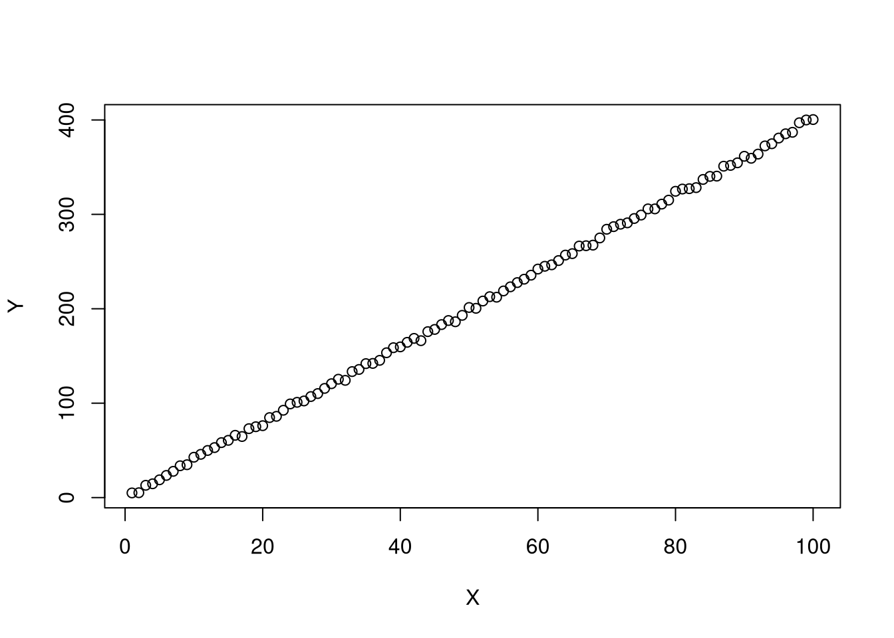
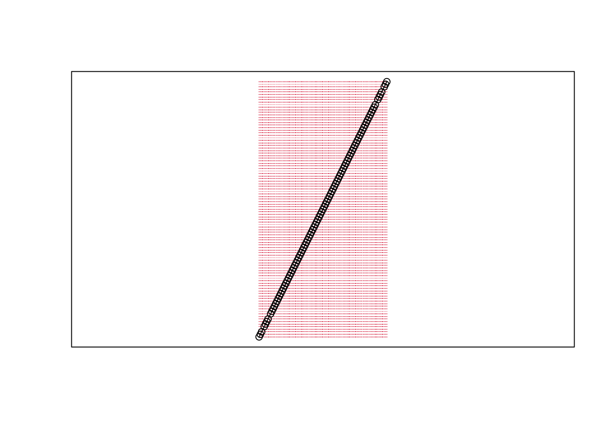

Chapter 8 Small Scale Projects
8.1 Types of Projects
HW assignments are small scale projects. We will create these little reports using R markdown to be almost entirely self-contained (showing both code and output).
Posters and presentations are another important type of scientific document. R markdown is also good at creating both of these, and actually very good with some additional packages. So we will also use flexdashboard for posters and beamer for presentions. (Click the links for guides on using these tools.)
8.2 Why R and R-Markdown
Note that
- R is our software
- Rstudio is our GUI
- R-markdown is our document
R and R markdown are also both languages: R studio interprets R code to produce statistics, R studio interprets R markdown code to produce pretty documents which contain both writing and statistics. You should already be a bit familiar with R, but not necessarily R Markdown. So to get you started, you should first read and work through this document, and then recreate it yourself as a litte tutorial. Before hopping into programming, however, understand why you will learn to program in both R and R-markdown languages
Good for complex stats, concise figures, and coherent organization.
- Built and developed by applied statisticians for statistics.
- Used by many in academia and industry.
Good for reproducible research
- http://www.r-bloggers.com/the-reproducibility-crisis-in-science-and-prospects-for-r/
- http://fmwww.bc.edu/GStat/docs/pointclick.html
- https://github.com/qinwf/awesome-R\#reproducible-research
- A Guide to Reproducible Code in Ecology and Evolution
- https://biostat.app.vumc.org/wiki/pub/Main/TheresaScott/ReproducibleResearch.TAScott.handout.pdf
Good for teaching
Good for getting a job
- As a student, think about labour demand. R skills, unlike other purely academic software, is something future employers use and want. Do more of your own research on this to understand how much to invest.
8.3 HW Example
Below is a template of what questions (and answers) look like.
Install any required packages
## Packages for Rmarkdown
install.packages("knitr")
install.packages("rmarkdown")
install.packages("bookdown")
## Other packages used in this primer
install.packages("plotly")
install.packages("sf")8.3.1 Question1
Simulate 100 random observations of the form \(y=x\beta+\epsilon\) and plot the relationship. Play around with different styles, https://www.r-graph-gallery.com/13-scatter-plot.html, to best express your point.
Answer I simulate \(400\) observations for \(\epsilon \sim 2\times N(0,1)\) and \(\beta=4\), as seen in this single chunk of code. Notice the upward trend.
n <- 100
E <- rnorm(n)
X <- seq(n)
Y <- 4*X + 2*E
plot(Y~X)
8.3.2 Question 2
Explore the data interactively via plotly, https://plotly.com/r/line-and-scatter/.
Answer Again, notice the upward trend.
library(plotly)
plot_ly( data=data.frame(X=X,Y=Y), x=~X, y=~Y)8.3.3 Question 3
Verify the definition of a line segment for points \(A=(0,3), B=(1,5)\) using a \(101 \times 101\) grid. Recall a line segment is all points \(s\) that have \(d(s, A) + d(s, B) = d(A, B)\).
Answer
library(sf)
s_1 <- c(0,3)
s_2 <- c(1,5)
Seg1 <- st_linestring( rbind(s_1,s_2) )
grid_pts <- expand.grid(
x=seq(s_1[1],s_2[1], length.out=101),
y=seq(s_1[2],s_2[2], length.out=101)
)
Seg1_dist <- dist( Seg1 )
grid_pts$dist <- apply(grid_pts, 1, function(s){
dist( rbind(s,s_1) ) + dist( rbind(s,s_2) ) })
grid_pts$seg <- grid_pts$dist == Seg1_dist
D_point_seg <- st_multipoint( as.matrix(grid_pts[grid_pts$seg==T,1:2]) )
D_point_notseg <- st_multipoint( as.matrix(grid_pts[grid_pts$seg==F,1:2]) )
plot(Seg1)
points(D_point_notseg, col=2, pch='.')
points(D_point_seg)
box()